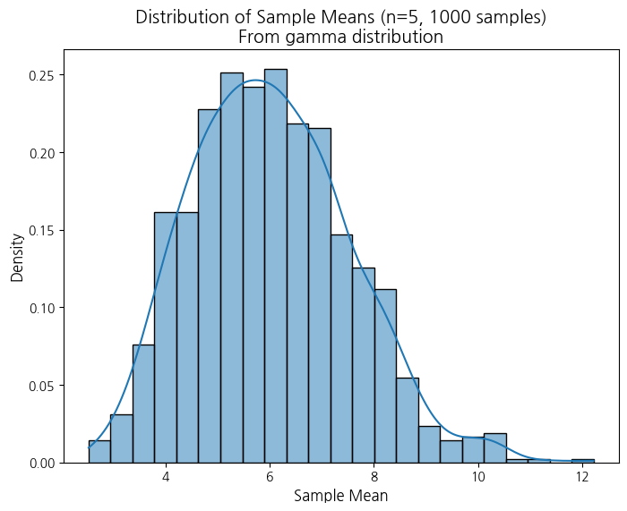
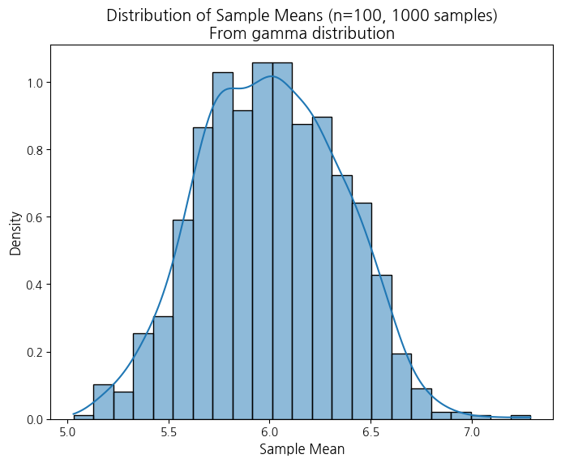
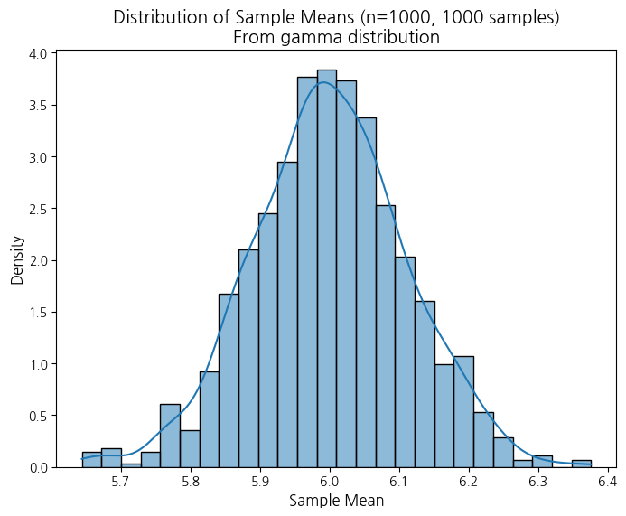

import numpy as np
import matplotlib.pyplot as plt
import seaborn as sns
from scipy.stats import skewnorm
def simulate_clt(distribution_type, sample_size, num_samples, **kwargs):
"""
중심극한정리(CLT) 시뮬레이션 함수
Args:
distribution_type (str): 모집단 분포 종류 ('uniform', 'exponential', 'normal', 'skewed_left', 'skewed_right')
sample_size (int): 각 표본의 크기
num_samples (int): 표본의 개수
**kwargs: 각 분포에 따른 추가 매개변수
- uniform: low (default=0), high (default=1)
- exponential: scale (default=1) (scale = 1/lambda)
- normal: loc (default=0), scale (default=1) (loc: 평균, scale: 표준편차)
- binomal: (n, p)
- gamma: (shape, scale)
Returns:
None (히스토그램 시각화)
"""
sample_means = []
for _ in range(num_samples):
if distribution_type == 'uniform':
sample = np.random.uniform(low=kwargs.get('low', 0), high=kwargs.get('high', 1), size=sample_size)
elif distribution_type == 'exponential':
sample = np.random.exponential(scale=kwargs.get('scale', 1), size=sample_size)
elif distribution_type == 'normal':
sample = np.random.normal(loc=kwargs.get('loc', 0), scale=kwargs.get('scale', 1), size=sample_size)
elif distribution_type == 'binomial':
sample = np.random.binomial(kwargs.get('n', 100), kwargs.get('p', 0.5), size=sample_size)
elif distribution_type == 'gamma':
sample = np.random.gamma(3, 2, size=sample_size)
else:
raise ValueError("Invalid distribution type.")
sample_means.append(np.mean(sample))
plt.figure(figsize=(8, 6))
sns.histplot(sample_means, kde=True, stat="density")
plt.title(f"Distribution of Sample Means (n={sample_size}, {num_samples} samples)\nFrom {distribution_type} distribution", fontsize=14)
plt.xlabel("Sample Mean", fontsize=12)
plt.ylabel("Density", fontsize=12)
plt.show()
return sample_means
# 실험 설정
distributions = {
# 'uniform': {'low': 0, 'high': 1},
# 'exponential': {'scale': 1},
# 'normal': {'loc': 0, 'scale': 1},
# 'binomial': {'n': 100, 'p': 0.1},
'gamma': {'shape': 3, 'scale': 2},
}
sample_sizes = [5, 100, 1000]
num_samples_list = [1000]
# 다양한 분포, 표본 크기, 표본 개수에 대한 실험
for dist_name, dist_params in distributions.items():
for sample_size in sample_sizes:
for num_samples in num_samples_list:
print(f"\n--- {dist_name}, sample_size={sample_size}, num_samples={num_samples} ---")
simulate_clt(dist_name, sample_size, num_samples, **dist_params)
--- gamma, sample_size=5, num_samples=1000 ---/root/anaconda3/envs/pypy/lib/python3.10/site-packages/seaborn/_oldcore.py:1119: FutureWarning: use_inf_as_na option is deprecated and will be removed in a future version. Convert inf values to NaN before operating instead.
with pd.option_context('mode.use_inf_as_na', True):
--- gamma, sample_size=100, num_samples=1000 ---/root/anaconda3/envs/pypy/lib/python3.10/site-packages/seaborn/_oldcore.py:1119: FutureWarning: use_inf_as_na option is deprecated and will be removed in a future version. Convert inf values to NaN before operating instead.
with pd.option_context('mode.use_inf_as_na', True):
--- gamma, sample_size=1000, num_samples=1000 ---/root/anaconda3/envs/pypy/lib/python3.10/site-packages/seaborn/_oldcore.py:1119: FutureWarning: use_inf_as_na option is deprecated and will be removed in a future version. Convert inf values to NaN before operating instead.
with pd.option_context('mode.use_inf_as_na', True):